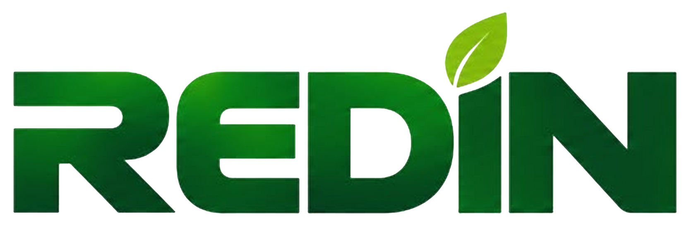
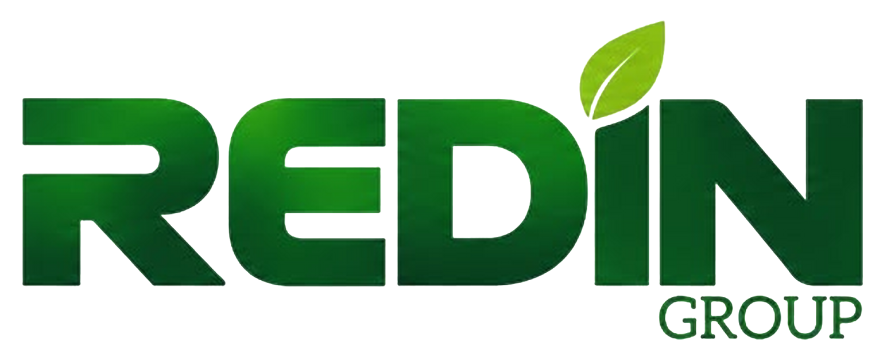
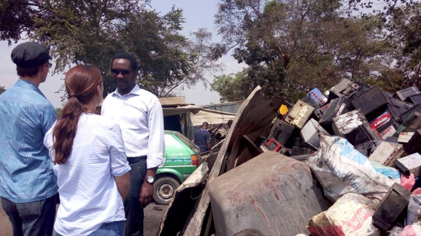
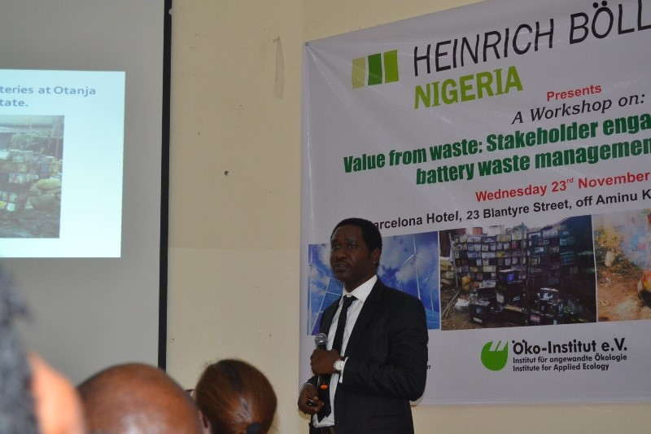
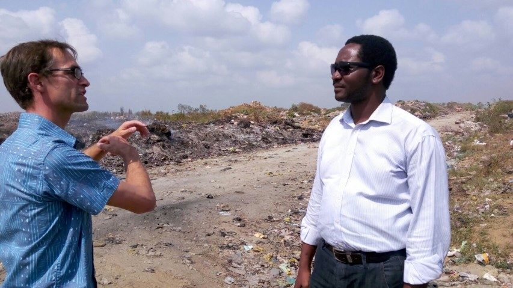
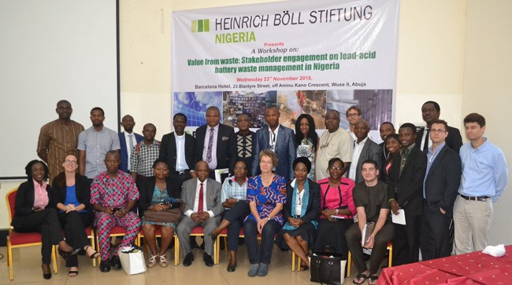
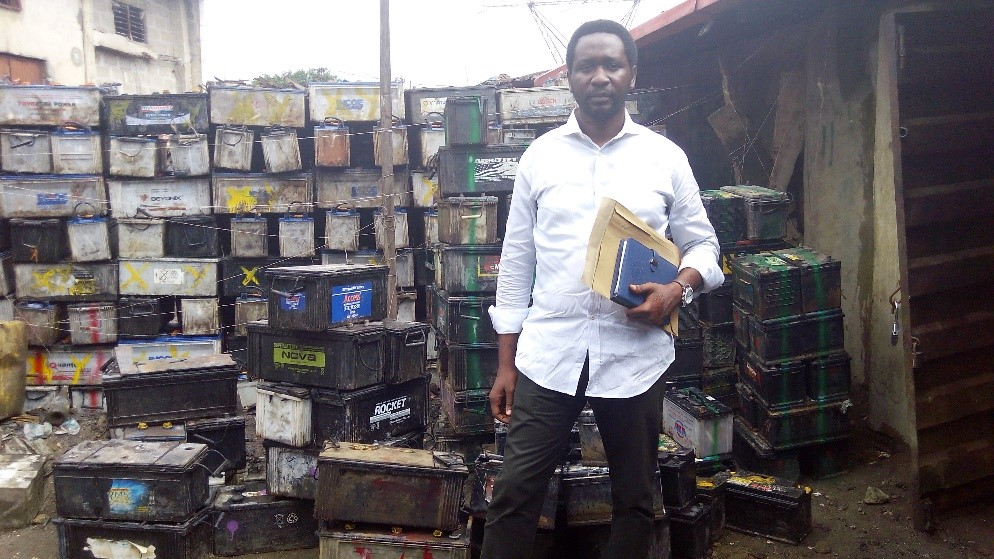
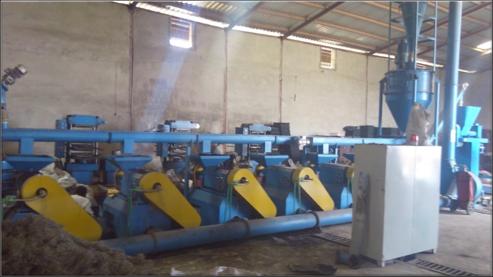
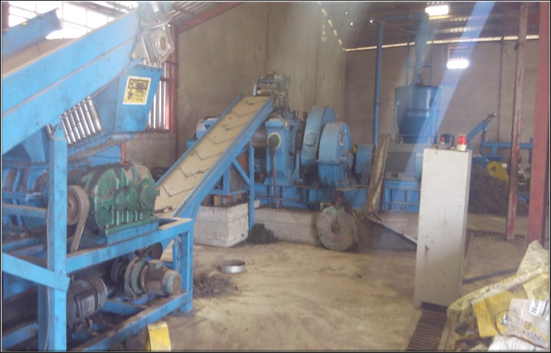

InitiativeAdvancing environmental compliance, circular economy, education, advocacy and programme implementation across Nigeria.

We drive environmental compliance, circular economy, recycling and sustainable implementation for a cleaner Nigeria and a more resilient future.
Our Group
REDIN Group is a leading environmental organisation driving environmental compliance, circular economy development, recycling and sustainable implementation across Nigeria and beyond.
About REDIN Group
InitiativeAdvancing environmental compliance, circular economy, education, advocacy and programme implementation across Nigeria.
Commercialises and scales recycling, project development, consultancy and sustainable infrastructure solutions.
Develops and builds waste-to-energy plants, vehicle recycling facilities, and related infrastructure for resource recovery and clean industrial development.
Our Flagship Projects
Safe, compliant and resource efficient recycling of end-of-life vehicles.
Turning motor-vehicle environmental requirements into practical, coordinated action.
Supporting cleaner air through accurate and reliable emission testing services.
Our Services
REDIN Initiative leads motor-vehicle producer responsibility compliance. REDIN Global Resources Ltd. delivers end-of-life vehicle recycling and vehicle-emission testing programs.
REDIN Industries develops and builds waste-to-energy plants, vehicle recycling facilities, and related infrastructure for resource recovery and clean industrial development.
Recovery and recycling of tires, plastics, metals, automotive materials and other recyclable waste streams.
Responsible collection, recycling, stewardship and Extended Producer Responsibility support for battery-related waste.
Waste reduction, collection, recovery, recycling and resource-efficiency approaches that keep materials in productive use.
Environmental strategy, feasibility studies, program design, public-sector advisory, regulatory implementation planning and sustainability support.
Training and awareness for individuals, companies, institutions, public agencies and communities on recycling, compliance and environmental responsibility.
Research, stakeholder engagement, policy support, thought leadership and public awareness on environmental issues.
Evaluation and support for technologies and infrastructure that enable environmental protection, monitoring, recycling and resource recovery.
Our Experience
We've delivered environmental solutions, sustainable infrastructure and capacity development programmes across Nigeria, in collaboration with government, industry and development partners.







Our Track Record
A history of practical environmental work, research and stakeholder engagement.
Our Leadership
Environmental leadership built on experience, collaboration and continuous learning.
REDIN's leadership direction is to combine deep environmental-sector experience with stronger program implementation, regulatory readiness, consulting capability, public education, corporate governance and measurable environmental outcomes.
Partner With Us
Partnerships that turn environmental priorities into practical action.
REDIN welcomes collaboration with government institutions, regulators, private-sector organizations, development partners, technical organizations, researchers, communities and other stakeholders working to advance environmental sustainability and circular-economy outcomes.
Your message has been sent. We'll get back to you soon.